Aplicacions i apps necessàries per a la connexió
Una vegada realitzades les connexions (instal·lació dels punts d'accés i targetes inalàmbriques), procedirem a la instal·lació de les aplicacions necessàries per al funcionament:
-
Aplicacions a l'ordinador
- 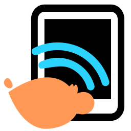 LliureX Connect: L'aplicació LliureX Connect és un menut conjunt d'eines que ens ajuden amb la instal·lació de les aplicacions necessàries a la tauleta, s'encarrega de gestionar les connexions inalàmbriques, habilitant o deshabilitant la possibilitat de configurar-se al gestor de xarxes (deshabilitat per defecte), i ens fa d'assistent per a la connexió tauleta-ordinador/ordinador-tauleta.
-
Aplicacions a la tauleta
- 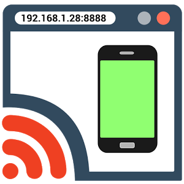 Screen Cast: Aquesta app per a Android permet enviar la pantalla de la tauleta a l'ordinador a través d'una adreça IP, i mostrar-la a través d'un navegado web.
- XSDL Server: Es tracta d'un servidor gràfic (servidor X) per a Android, de manera que permet mostrar en ell aplicacions que s'estan executant a l'ordinador.
Instal·lació i ús de LliureX Connect
Per tal d'instal·lar el LliureX Connect, podem utilitzar bé el gestor de paquets Synaptic o la novedosa tenda d'aplicacions de LliureX, disponible a partir de la versió 16 de LliureX.
Una vegada instal·lat, podem accedir a ell a través del menú d'inici, a la secció d'educació especial:
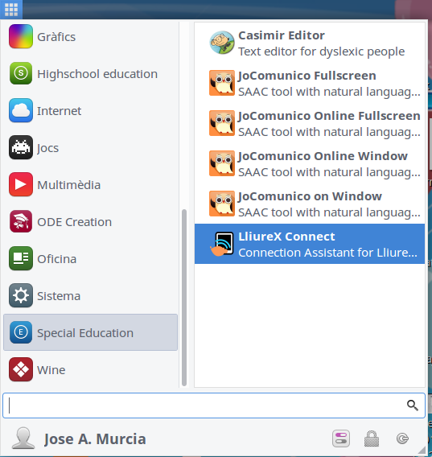
En fer clic sobre l'opció de menú, en primer lloc es carrega una finestra d'ajuda, que ens indica les aplicacions necessàries a la tauleta Android per al complet funcionament de l'aplicació.
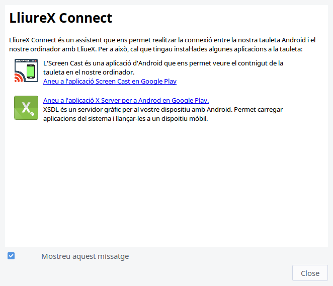
Per tal d'instal·lar les aplicacions necessàries a la tauleta, podem buscar-les directament a Google Play, o fer clic en els enllaços que ens proporcionen. Si estem identificats al Google Chrome amb el mateix compte amb el que tenim registrada la tauleta, podrem instal·lar les aplicacions a la tauleta directament des del navegador Chrome.
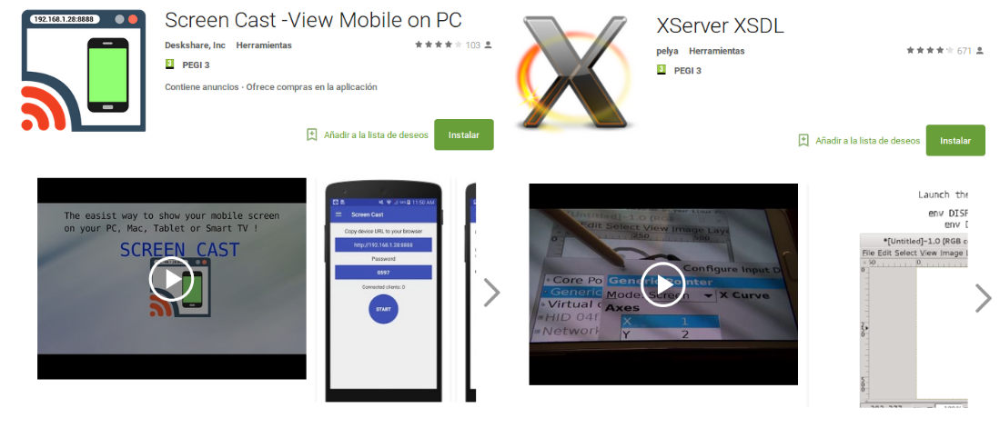
Una vegada tenim les aplicacions instal·lades, podem fer ús dels diferents assistents per a la connexió. Per a això, veiem a la barra superior la incona de l'aplicació del Lliurex Connect, amb les opcions disponibles:
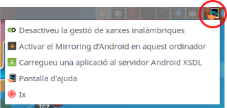
Desactivar/Activar la gestió de xarxes sense fil
Per tal de connectar la tauleta i l'ordinador, cal que ambdós es troben a la mateixa xarxa. Si decidim fer-ho a través d'una connexió swense fil, cal que deixem al gestor de xarxes que gestione també aquesta connexió. És possible, que si ho fem amb alguna targeta sense fil USB, el gestor de xarxes deshabilite la seua gestió per defecte, de manera que l'hajam d'habilitar des d'aci.
Si no tenim problemes per configurar la xarxa inalàmbrica, podem continuar. En cas contrari, activarem primer la gestió de xarxes inalàmbriques, i després configurarem a través del gestor de xarxes la xarxa inalàmbrica a la que ens volem connectar.
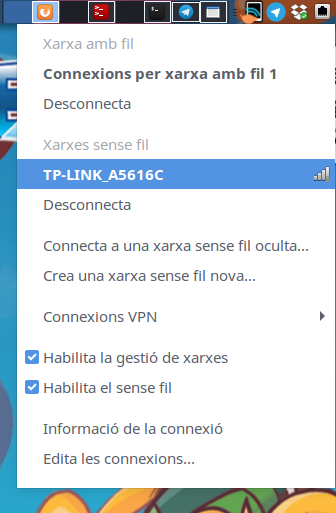
Activar el Mirroring d'Android en aquest ordinador
Si volem visualitzar a la pantalla de l'ordinador (i per tant a la projecció a la PDI) el que s'està fent a la tauleta, en primer lloc, haurem de llançar l'aplicació Screen Cast a la tauleta.
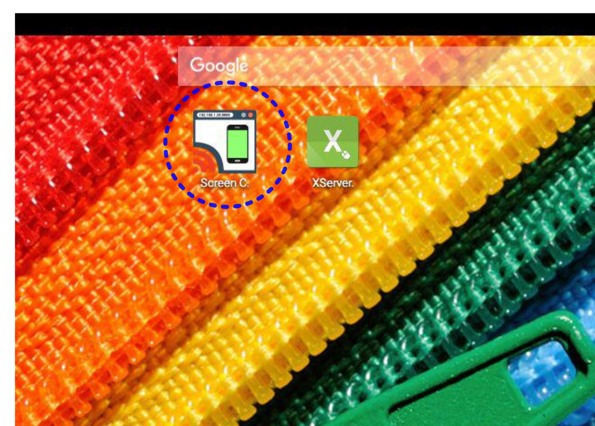
Quan fem clic a la icona de l'aplicació, se'ns mostrarà una pantalla semblant a aquesta:
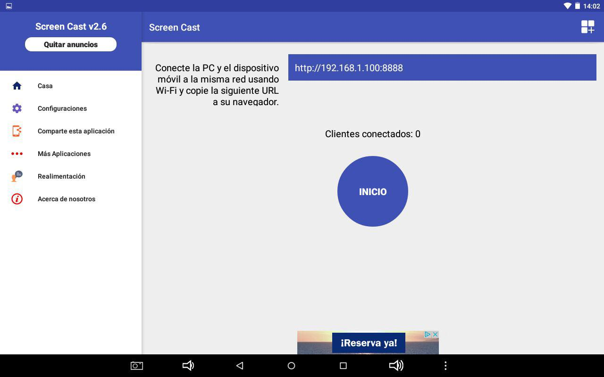
Ens haurem de fixar en l'adreça que diu http://adreça:8888. A la imatge anterior aquesta és la 192.168.1.100.
Sense moure'ns d'aquesta pantalla, a l'ordinador llançarem l'opció "Activar el Mirroring d'Android en aquest ordinador" del LliureX connect, on haurem de copiar l'adreça que ens indica l'Android:
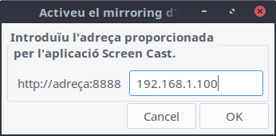
Fet açò, quan donem a OK, i si tot ha anat bé, se'ns mostrarà una finestra a l'ordinador amb la pantalla principal d'Screen Cast, que ens demana que fem clic al botó per iniciar l'Screen Cast.
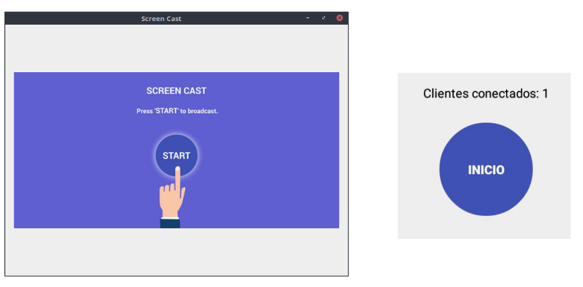
A l'aplicació Screen Cast de la pròpia tauleta, vorem que ja apareix un client connectat, de manera que només haurem de fer clic al botó d'inici per començar a veure a l'ordinador tot el que fem a la tauleta.
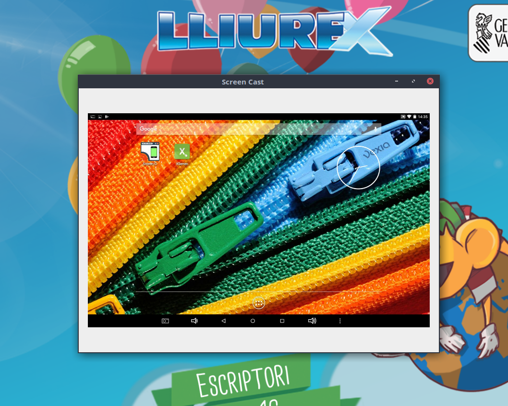
Si desitgem aturar l'aplicació, a la tauleta, arrossegarem el dit des de la part superior de la pantalla cap avall, per veure les notificacions, i veurem que se'ns dóna la possibilitat d'aturar el Screen Casting:
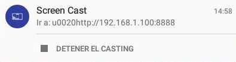
De manera que fem clic en "Detener el Casting", i tanquem la finestra de l'ordinador.
Carregueu una aplicació al servidor Android XSDL
Si el que desitgem és llançar qualsevol aplicació de l'ordinador a la tauleta, haurem de llançar primerament el servidor gràfic XSDL sober la tauleta.
En fer-ho, i després d'unes pantalles on podrem escollir la resolució, ens apareixeran a la pantalla les instruccions per realitzar la connexió:
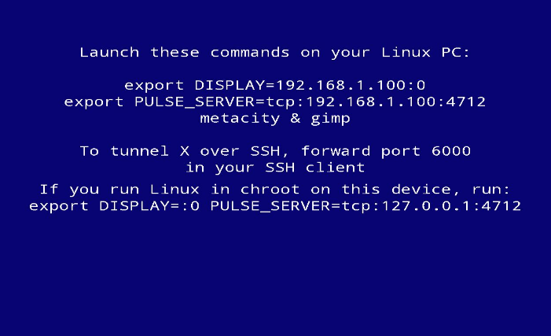
Amb aquestes dades, seleccionem al LliureX Connect l'opció de carregar una aplicació al servidor Android XSDL, i les introduïm en un quadre de diàleg, junt amb l'aplicació que desitgem llençar.
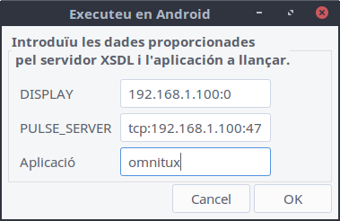
I en uns instants, tindrem l'aplicació executant-se a l'ordinador, però mostrant-se a la tauleta. En la següent imatge, a més, tindrem una imatge espill amb el Screen Cast comentat anteriorment a l'ordinador.
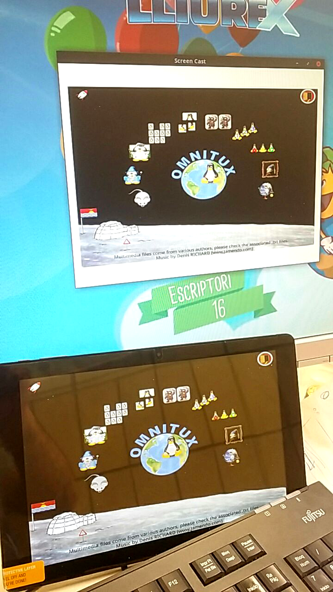
Per tal d'aturar el servidor XSDL a la tauleta, arrossegant de nou el dit des de la part superior de la pantalla cap avall, mostrarem les notificacions, i farem clic sobre el botó d'"Stop" del XServer XSDL.
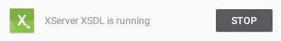